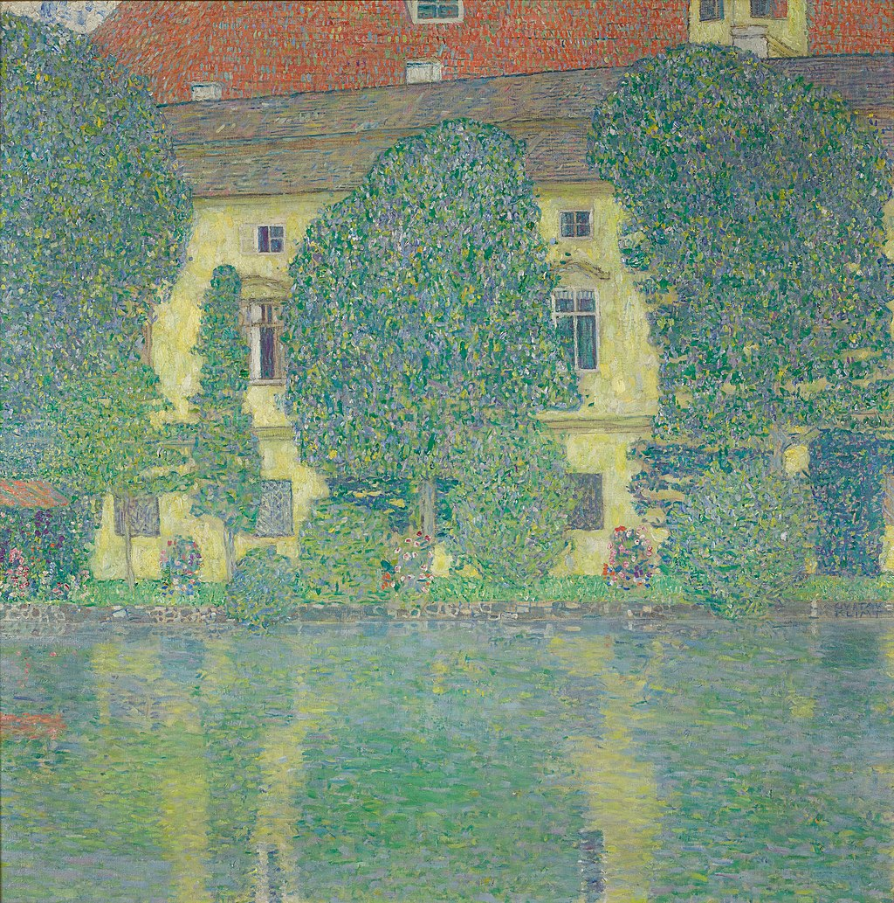

<head>
<meta charset="UTF-8" />
<meta name="keywords" content="drawing, painting" />
<meta name="description" content="drawings by Sunjy" />
<title>Sunjy</title>
<link rel="shortcut icon" type="image/x-icon" href="../../mImages/mCommon/favicon.ico" media="screen" />
<link rel="stylesheet" type="text/css" href="../../mCsses/mCommon/mCssA.css" />
<link rel="stylesheet" type="text/css" href="../../mCsses/mCommon/mCssB.css" />
<link rel="stylesheet" type="text/css" href="../../mCsses/mCommon/mCssC.css" />
<link rel="stylesheet" type="text/css" href="../../mCsses/mCommon/mCssD.css" />
<link rel="stylesheet" type="text/css" href="../../mCsses/mContent/mCssA.css" />
<link rel="stylesheet" type="text/css" href="../../mCsses/mContent/mCssB.css" />
<link rel="stylesheet" type="text/css" href="../../mCsses/mContent/mCssC.css" />
<link rel="stylesheet" type="text/css" href="../../mCsses/mContent/mCssD.css" />
</head>
<script type="text/javascript" src="../../mScripts/mContent/mContentAA.js" /></script>
<script type="text/javascript" src="../../mScripts/mContent/mContentAB.js" /></script>
<script type="text/javascript" src="../../mScripts/mContent/mContentAC.js" /></script>
<script type="text/javascript" src="../../mScripts/mContent/mContentAD.js" /></script>
<script type="text/javascript"></script> 
<script type="text/javascript">
document.write('<div class="mImgAbsolute"></div>');
/*
document.write('<p class="mFontSizeBColor" />From a white paper...</p>');
document.write('<table class="center"><tr><td>');
document.write('');
document.write('</td></tr></table>');
*/
</script>


<script type="text/javascript">
document.write('<p class="mFontSizeBColor" />Schloss Kammer am Attersee III</p>');
document.write('<p class="mFontSizeSColor" />Schloss Kammer am Attersee III by Gustav Klimt depicts Kammer Castle, seen from the waterfront. The Castle, which originally dates from the 13th century, was converted into a three-story lake castle between 1622 and 1649.<br><br>The new castle included a knight’s hall, and later, two low side wings were added, which provided with arcades on the ground floor. The gate construction also dates from this period.<br><br>In the castle, there is an 18th-century chapel decorated with stucco and dedicated to the Virgin Mary. A  staircase was added in 1748, which leads to the ballroom. The castle is privately owned and can only be visited for official events.<br></p>');
document.write('<table class="center" /><tr><td>');
document.write('<br>The new castle included a knight’s hall, and later, two low side wings were added, which provided with arcades on the ground floor. The gate construction also dates from this period.<br><br>In the castle, there is an 18th-century chapel decorated with stucco and dedicated to the Virgin Mary. A  staircase was added in 1748, which leads to the ballroom. The castle is privately owned and can only be visited for official events.<br>" />');
document.write('</td></tr></table>');
</script>


